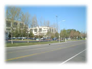

| ..*..*.. 2002年4月23日(火) 晴れ ..*..*.. 4月に入ってぐーんと暖かくなってきました。最近はときどき、会社の周りを散歩します。30分にも満たないくらいなんだけど、結構、リフレッシュになります。 これは会社を出たところを撮ってみました。私の会社はサンタクララにあり、シリコンバレーの中心地とも言えるかもしれない、いろんな会社が集まっているところです。この写真は3Comです（パームパイロットを作った会社）。たまたま撮りました。高いビルはほとんどありません。こんな風にみんな平たいんですよね。車通勤が中心だから、道路も広いです。 昼間は車もあまり多くなくて、散歩するにはちょうどいいんです。近くに枯れた川があって、そこが散歩道みたいになってて、ジョギングしてる人もいます。会社の友達とおしゃべりしながら歩きます。 今の季節、花がとてもきれいです。下の写真は、2週間くらい前に撮りました。さくらみたいですよね。でも、さくらにしては長い間、花が開いています。だから、りんごの花かもしれません。1か月以上咲いていたんじゃないかな。私の背の倍くらいの高さで、あちこちに植わっている木が３月頃いっせいに花をつけました。 カリフォルニアは基本的に雨はほとんど降りません。だから、すべての植物には人の手が入ります。水がない時期が多いので、雑草も育たないんですね。そういう状況下だからなのか、私の会社もそうですが、みんな競うように外観をきれいにします。 こういう木は別ですが、美しい外観を保つために、枯れてしまった花は抜かれて、いつもきれいな咲いている花が植えられます。 そうやって咲いている花もたくさん写真に撮ったので、これから少しずつ紹介しますね。（今日は加工が間に合わなかったの） |